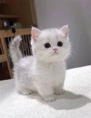
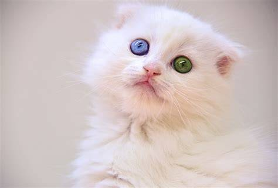
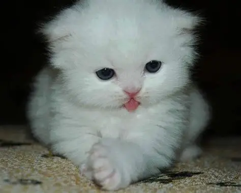

Пропал котенок Олег! Белый пушистый малыш с голубыми глазами и розовым носиком. Очень ласковый, отзывается на свое имя. Любит играть с мячиком и мурлычет громче всех! Потерялся в районе центрального парка 10 марта. Без еды и воды может погибнуть! Нашедшего просим покормить и вернуть за большое вознаграждение! Хозяева очень скучают и ищут своего любимца. Если вы видели похожего котенка или знаете, где он может находиться, позвоните по телефону: +7 (905) 329-55-05. Пожалуйста, помогите найти Олега! Каждый, кто поделится информацией, получит благодарность и вознаграждение!